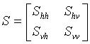
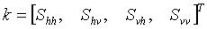
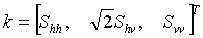
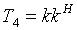
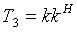
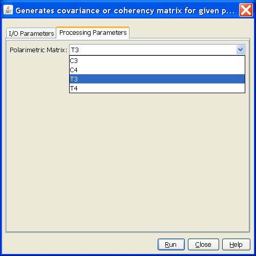

Polarimetric Covariance or Coherency Matrices Generation Operator
This
operator creates the following polarimetric covariance or coherency
matrices for a given full polarimetric SAR product:
- covariance matrix C3
- covariance matrix C4
- coherency matrix T3
- coherency matrix T4
Covariance Matrix C4
Let

be the complex Sinclair scatter matrix and

be the 4-D target vector, where superscript T stands for the
transpose operator. Then the (4x4) covariance matrix C4 is defined as
where superscript H represents the transpose conjugate operator.
Covariance Matrix C3
For monostatic backscattering case, the transmitter and the receiver
are collocated. The reciprocity constrains the Sinclair scattering
matrix to be symmetrical, i.e. Shv = Svh. The 3-D target vector becomes

Then the (3x3) covariance matrix C3 is given by
Cohrency Matrix T4
Let the 4-D target vector be defined as the follows
Then the (4x4) coherency matrix T4 is given by

Cohrency Matrix T3
For monostatic backscattering case, the target vector becomes
Then the (3x3) coherency matrix T3 is given by

Input and Output
- The
input to this operator is a full polarimetric SAR product with 8 bands,
i.e. I and Q bands for HH, VV, HV and VH polarizations.
- Since the output covariance or coherency matrix is Hermitian positive semidefinite, only 9 elements in C3 or T3 are independent, and 16 elements in C4 or T4 are independent. Therefore only the independent elements are output. For example, the following 9 bands are output: C11, C22_real, C12_imag, C13_real, C13_imag, C22, C23_real, C23_imag, C33 for covariance matrix C3.
Parameters Used
- Polarimetrix Matrix: The covariance or coherency matrix type. The available types are: C3, C4, T3 and T4.

Reference:
[1] Jong-Sen Lee and Eric Pottier, Polarimetric Radar Imaging: From Basics to Applications, CRC Press, 2009